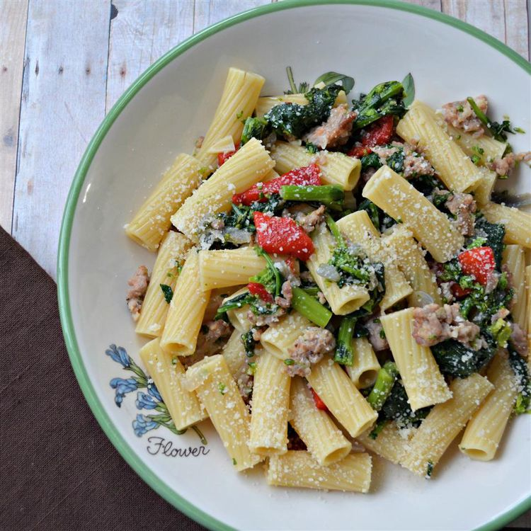

Cavatelli

Cavatelli for some happy bellies!
- 2 pounds ricotta cavatelli
- 1 pound broccoli rabe, chopped
1 tablespoon butter
- 1 tablespoon olive oil
- 1 pound Italian sausage, removing from casings and cut into bite-size pieces
- 1 large onion, diced
- 10 ounces roasted red peppers, cut into 1-inch strips
- 1 tablespoon chopped garlic
- 2 tablespoons concentrated chicken stock (such as Knorr®)
- ½ cup dry white wine
- ½ cup water
- 1 ½ teaspoons cornstarch
- 1 pinch salt and ground black pepper to taste
- ½ cup grated Parmesan cheese
- Bring a large pot of lightly salted water to a boil. Cook cavatelli in the boiling water, stirring
occasionally until tender yet firm to the bite, 9 to 11 minutes. Drain.
- Fill the same pot with salted water and bring to a boil.
Add broccoli rabe; cook until tender, 7 to 10 minutes. Drain.
- Heat butter and olive oil in a large skillet over medium heat.
Add sausage and onion; cook and stir until sausage is no longer pink, 5 to 7 minutes. Stir in broccoli rabe, roasted
red peppers, and garlic. Cook until flavors combine, about 5 minutes.
- Dissolve chicken stock with white wine and water in a small bowl. Whisk in cornstarch. Pour chicken stock mixture into the skillet. Season with salt and pepper. Bring sauce to a
simmer until slightly thickened, 3 to 5 minutes. Remove from heat.
- Pour sauce over cooked cavatelli and top with
Parmesan cheese. Toss lightly and serve.